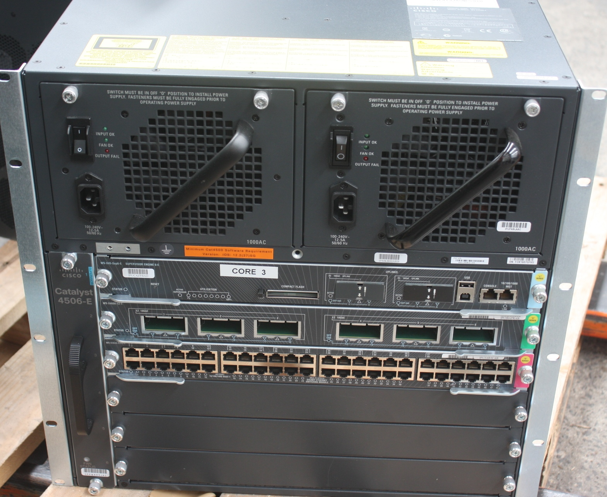

Nuestras soluciones incluyen una variedad de opciones para el core y la distribución de su red de datos, con los modelos modulares de alta disponibilidad y rendimiento, puede proteger su red ante fallos, tener el rendimiento necesario y crecer de acuerdo a la demanda de la red.
Asesoría en la solución
Ofrecemos los servicios necesarios para la planeación y diseño de su red,
elaboramos un diseño detallado para una implementación exitosa, creamos los procedimientos adecuados para la operación de la red, con el objetivo de tener una completa gobernabilidad de la misma.
Creamos el diseño general de su red estableciendo la topología adecuada, selección de protocolos de comunicaciones, lógica para las protecciones de red, diseño de calidad de servicio para las aplicaciones, seguridad de la red, entre otros elementos.
Para la fase de implementación proporcionamos las ingenierías a detalle para la correcta implmentación, considerando todos los aspectos fisicos y lógicos pertinentes. Realizamos las recomendaciones para la operación de la red, en actividades como adiciones a la red, modificaciones, desinstalaciones y atención a fallas.
Proporcinamos también soporte a la operación con atención 24x7, en las modalidades de soporte bajo llamada, monitoreo activo, soporte en campo y acompañamiento a la operación.
Contamos con diferentes alternativas para el acceso a la red, con equipos de alta densidad y capacidad, equipos administrables y con opciones para monitoreo de funcionamiento así como recolección de estadísticas
Selección de productos
Con una amplia variedad de opciones que se ajustan a las diferentes necesidades de su organización, con equipos para pequeñas oficinas hasta equipos para accesos en campus o edificios, trabajos en conjunto con nuestros clientes para proveer la tutoría adecuada en la selección de los diferentes modelos.
El acceso es el punto de entrada a la red, donde deben crearse las reglas pertinentes para los usuarios de la red, protegiendo a la red de cualquier usuario malicioso, sin bloquer el acceso a los recursos correspondientes de parte de los usuarios de la organización.
Para validar que su red tendrá el rendimiento esperado, proporcinando a las aplicaciones criticas de su organización que funcionen bajos los diferentes escenario de operación, es necesario realizar la certificación correspondiente de su red.
Opciones de mediciones
Realizamos mediciones de rendimiento físico y de los elementos activos de su red. Proporcinamos servicios como:
- Certificación de puntos de red
- Mediciones de ancho de banda de enlaces
- Mediciones de cobertura y rendimiento de redes inalámbricas
- Validación de rendimeinto de componentes pasivos
- Analisís de tráfico de la red
Para la implementación de redes inalámbricas escalables y seguras, es necesario tomar en cuenta muchos elementos para la completa cobertura de la red, manteniendo el acceso a los recursos de información de su organización privados. El diseño e implementación debe considerar una señal robusta en os puntos donde se requiere, manteniendo la disponbilidad y accesibilidad.
Tipos de soluciones
Proveemos soluciones para redes inalámbricas de área local, asi como para conexiones punto a punto para la extensión de su red. Dentro de la propuesta incluimos tanto los elementos activos como los compentes pasivos de este tipo de redes. Le proporcionamos el servicio de implementación de cad uno de los componentes
Para cada solución suminstramos diferntes opciones para el monitoro y aprovisionamiento de los distintos elementos, servicios, usuarios y políticas de seguridad. Los sistemas incluyen una variedad de reportes para completo control de su red.